Фото
Код
Наименование, описание
Цена, руб.
Барбарис (Berberis)

1002001
Тунберга Адмирайшн (thunbergii Admiration), высота до 0,5 м, красивый низкорослый кустарник округлой формы, листья круглые, бордовые, с тонким жёлтым кантом.
600
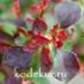
1002006
Тунберга Файр Болл (Thunbergii Fire Ball), высота 0,3-0,5 м. Медленнорастущий карликовый кустарник с плотной шаровидной кроной диаметром 0,3-0,5 м. Листья мелкие, яркие, оранжево-красные. На молодых побегах -ярко-красные.
600
Бересклет (Euonymus)

1003001
Форчуна Эмеральд Голд (Fortunei Emerald Gold), высота до 0,25 м, вечнозелёный со стелющимися побегами, листья тёмно-зелёные с широкой золотистой каймой.
350

1003002
Форчуна Эмеральд Гэйтай (Fortunei Emerald Gaiety), высота до 0,25 м, вечнозелёный со стелющимися побегами, листья зелёные с белой каймой.
350
Вейгела (Weigela)
1004001
Гибридная Ева Ратке (hibrida Eva Rathke), высота до 1 м, цветки трубчатые, блестящие, красно-карминовые с небольшим высветлением внутри.
500-700

1004002
Цветущая Пинк Поппет (florida Pink Poppet), высота до 1,0 м, цветки колокольчатые, светло-розовые, собраны в соцветия по 3-4 штуки, плотно покрывающими весь куст.
500-700
Гортензия (Hydrangea)
Гортензия древовидная (Hydrangea Arborescens)
1005001
Анабелл (Anabelle), высота до 1,5 м, цветки кремово-белые в больших щитковидных соцветиях.
500
1005002
Инвинсибелль Спирит/Пинк Аннабелль (Invincibelle Spirit/Pink Annabelle), высота 0,9-1,2 м, соцветия шаровидные крупные. В начале цветения верхняя сторона лепестков бледно-розовая, нижняя – тёмно-розовая. Цветёт на побегах прошлого и текущего года с июня до заморозков.
700

1005008
Инкредибл Блаш / Свит Аннабель (Incrediball Blush/ Sweet Annabelle), высота до 1,2 м, внешняя сторона лепестков красно-розового цвета, внутренняя сторона лепестков – бледнее, поэтому в полном роспуске соцветие выглядит светлее, чем в начале цветения. Соцветие полусферическое. Цветёт на побегах прошлого и текущего года с июня до заморозков.
1 200
1005005
Кандибель Маршмеллоу (Candybelle Marshmallow), высота до 80 см. Цветки лососево-розовые, в больших плотных соцветиях. Цветёт на побегах прошлого и текущего года с июня до заморозков.
1 200
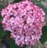
1005007
Мэджикал Пинкербелл (Magical Pinkerbell), высота около 1 м. Цветки пурпурно-розовые, более крупные и темнее, чем у сорта «Invincibelle Spirit». Цветёт на побегах прошлого и текущего года с июня до заморозков.
700

1005009
Хэвис Старбёст (Hayes Starburst), высота до 1м. Куполообразное соцветие состоит из стерильных сильно махровых цветков, имеющих форму звездочек. Вначале соцветие имеет салатовый оттенок, затем снежно-белый, к концу цветения снова зеленеет.
900
Гортензия метельчатая (Hydrangea paniculata)

1006023
Бо Бо (Bo Bo), высота до 70 см, цветки стерильные, с переходом от лимонно-зелёного до белого и затем до мягко-розового. Соцветия плотные, конические.
900

1006001
Ваниль Фрайз (Vanille Fraise), высота до 2м, соцветия крупные, широкопирамидальные, цветки быстро меняют белый цвет на насыщенно-розовый с вишнёвым оттенком.
700 -1200
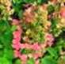
1006018
Вимс Ред (Wim's Red), высота до 1,5 м. Соцветия крупные, конические высотой 30-40 см. В начале цветения белые, затем розовые, в конце цветения – насыщенно-бордово-красные. Соцветия состоят из стерильных и фертильных цветков.
900

1006026
Геркулес (Hercules), высота до 1,5 м. Цветки исключительно стерильные, крупные, зеленоватые, в полном расцвете белоснежные с зеленоватыми кончиками, в конце лета слегка розовеющие. Соцветия конусовидные, плотные, очень крупные.
1 200

1006019
Графити (Graffiti), высота до 1 м. Цветки меняют окраску в течение сезона. Соцветия изначально цвета лайма, в полном расцвете салатово-белые с зеленоватыми вершинами, а в конце сезона они ярко-розовые с зелеными и белыми полосами. НОВИНКА!
900 –
1 200

1006003
Даймонд Руж (Diamant Rouse), высота до 1,5 м, пышные соцветия размером 20-30 см, состоящими, в основном, из стерильных цветков, в начале цветения – белые, к осени – ярко-красные с фиолетово-пурпурным.
900
1006023
Диамантино (Diamantino), высота 1,2–1,4 м. Соцветия размером 20–25 см, очень плотные, состоящие из стерильных цветков. В начале цветения светло-жёлто-зелёные и золотистые, затем чисто белые, и к концу цветения слегка розовеют.
1 200

1006027
Калорфул Коктейль (Colourful Cocktail), высота до 1 м. Соцветия крупные, плотные из стерильных цветков. Цветки меняют цвет в течение сезона от кремово-белого до тёмно-розового, при этом верхушка соцветия остаётся белой.
1 200

1006004
Ламлайт (Limelight), высота до 2 м, соцветия лимонные, позднее розовеют.
700

1006020
Литл Фрайз/Литтл Фреско (Little Fraise/Little Fresco), высота до 80 см. Куст очень компактный. Цветки вначале кремово-белые и светло-зелёные, затем нежно-розовые. Соцветия крупные, плотные.
900
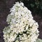
1006006
Мэджикал Мунлайт (Magical Moonlight), высота до 2 м, цветки стерильные собраны в очень плотные пышные, плотно "набитые" широкопирамидальные соцветия длиной до 40 см. Соцветия в начале цветения цвета зеленоватого лайма, затем кристально-белые, в конце цветения фисташковые.
900

1006007
Мэджикал Файер (Magical Fire), высота до 1,5 м, крупные соцветия состоят, в основном, из стерильных цветков, которые вначале чисто-белые, затем тёмно-розовые и в конце цветения пурпурно-красные.
900
1006024
Пастель Грин (Pastel Green), высота 1,0-1,5 м. Отличительная особенность сорта – это меняющие цвет лепестки соцветий. За лето они успевают сменить окраску несколько раз: белые, кремовые, фисташковые, лососевые, розовые и винные оттенки, сменяющие друг друга.
700 –
1 200
1006025
Пинки Промис (Pinky Promise), высота до 70 см. Соцветие крупное, плотное, размером 15-20 см, состоит из стерильных цветков. В начале цветения цветки ослепительно белого цвета, затем окрашиваются в нежно-розовые тона, а к концу становятся насыщенно розового цвета с лаймовым центром и жёлто-зелёными цветками внутри метелки.
1 200
1006009
Полар Бир (Polar Bear), высота до 1,5 м, очень плотные конические соцветия длиной до 40 см, цветки стерильные, сначала светло-фисташковые, затем белые, а к концу лета появляется нежно-розовый оттенок.
700 –
1 200
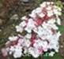
1006010
Ренсам /Самарская Лидия (Rensam), высота 1,1-1,3 м. Цветки вначале белые с красными «бусинками» в центре, затем быстро окрашиваются в ярко-красный цвет, при этом «бусинки» светлеют. Соцветия небольшие, конусовидные, плотные. НОВИНКА!
700 - 1 200

1006021
Самма Лав (Summer Love), высота до 1,0 м. Цветки меняют окраску три раза за сезон. В начале цветения цветки белые, потом розовеют, затем становятся тёмно-розовые. Цветёт в июле-сентябре.
700 –
1 200
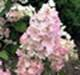
1006011
Сандей Фрайз (Sandae Fraise), высота до 0,8 м, соцветия крупные пирамидальные, цветки меняют белый цвет на насыщенно-розовый.
700 –
1 200
1006012
Сильвер Доллар (Silver Dollar), высота до 1,2 м, широкие конусы соцветий из очень крупных, ярко-белых с серебристым оттенком цветков, которые частично розовеют.
1 200

1006013
Скайфолл/Френне (Skyfall/Frenne), высота до 1,2 м, цветки большие, гиацинтовидные, вначале белые, затем бледно-розовые. Соцветия очень плотные, крупные, конические. НОВИНКА!
700 –
1 200
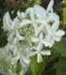
1006028
Стар Роуз (Star Rose), высота 1,7-2,0 м. Очень необычный и эффектный сорт! Стерильные цветки огромные, диаметром 8-10 см, состоят из четырёх узких длинных, напоминающих пропеллер или порхающих бабочек. Окраска цветков белая, к концу сезона неравномерно розовеет. НОВИНКА!
700

1006014
Строберри Блоссом (Strawberry Blossom), высота до 1,0 м, компактная версия широко известной Ваниль Фрайз ( Vanille Fraise). Цветки распускаются кремовыми с лёгким румянцем, к осени постепенно розовеют, под конец цветения приобретают малиновый оттенок, сохраняя верхушку соцветия цвета слоновой кости. НОВИНКА!
700 –
1 200
1006016
Фрэйз Мелба (Fraise Melba), высота до 1,5 м, примечательной особенностью этого сорта является еще более сильный контраст белого тона в начале цветения, очень быстро переходящего в ярко-красный, при этом верхушка соцветия остаётся белой, что создаёт необыкновенный бело-красный дуэт. НОВИНКА!
900
1006017
Эрли Сенсейшн (Early Sensation), высота до 2 м, соцветия крупные, плоские из розовых фертильных и кремовых стерильных цветков, которые быстро окрашиваются в насыщенно-розовый цвет. Цветёт с июля на протяжении 2-3 мес.
900
Диервилла (Diervilla)
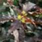
1024001
Ручейная Кодиак Ред (rivularis Kodiak Red), высота до 100 см. Ярко-жёлтые ароматные цветки эффектно контрастируют с зеленовато-красными листьями. НОВИНКА!
500
Лапчатка кустарниковая (Potentilla fruticosa )

1025002
Хоплейс Оранж (Hopleys Orange), высота 0,6–0,8 м. Цветки яркие, оранжевые, крупные, с длинными жёлтыми тычинками, не выгорают на солнце.
500
Лещина/фундук (Corylus)

1027001
Гибридная Московский рубин, высота до 5 м. Высокий, пряморастущий кустарник. Листья пурпурно-красные, к осени зелёные с пурпурным оттенком. Плодоносит обильно.
500
Пузыреплодник (Physocarpus)
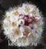
1022001
Калинолистный Диаболо (opulifolius Diabolo), высота 2-3 м. Листья 3-5 лопастные, пурпурно-красные. Цветки розовые в щитковидных соцветиях..
500
Ракитник (Cytisus)

1013001
Стелющийся Вэнкувэ Голд (decumbens Vancuver Gold), высота до 0,2 м, куст с лежащими на земле побегами, листья мелкие, цветки ярко-жёлтые, похожи на цветки гороха.
500
Рододендрон (Rhododendron)
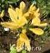
1014001
Жёлтый (luteum), листопадный кустарник высотой до 1,5 м. Цветки по 7-12 шт. очень душистые золотисто-жёлтые с тёмно-жёлтым пятном. Зацветают во второй половине мая, до распускания листьев, цветение длится около 2-3 недель. Полностью зимостойкий вид.
900

1014007
Японский лососевый (japonicum salmon), листопадный кустарник высотой до 2 м. Цветки воронковидные, диаметром 6-8 см, лососево-оранжевые, собраны в кисти по 6-12 штук,
900
Сирень (Syringa).
Саженцы корнесобственные, выращены из зелёных черенков.
Саженцы по почте не пересылаются. Реализация на месте.
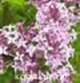
1015002
Мейера Ред Пикси (meyeri Red Pixie). Миниатюрный компактный кустарник высотой до 120 см. Распустившиеся цветки сначала красно-фиолетовые, затем розовеют, собраны в соцветия длиной 3-10 см. Зацветает в конце мая-начале июня. Повторно цветёт в августе-сентябре.
УЖЕ НЕТ
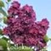
1015022
Обыкновенная (vulgaris) Анна Шиач (Anne Shiach). Очень редкий и высоко декоративный сорт с простыми крупными цветками самого насыщенного пурпурного цвета. Бутоны тёмно-пурпурные.
УЖЕ НЕТ
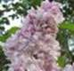
1015019
Обыкновенная (vulgaris) Великая победа, бутоны насыщенно-лиловые, цветки махровые диаметром до 3 см, светло-лиловые. Внутренние лепестки с голубыми тенями.
900 –
1 200

1015006
Обыкновенная (vulgaris) Знамя Ленина, цветки в полуроспуске пурпурно-красные, затем красновато-лиловые, простые, крупные, до 2,5 см.
900 –
1 200

1015023
Обыкновенная (vulgaris) Колхозница, бутоны лилово-пурпурные. Цветки диаметром до 2,0 см, розовато-лилово-пурпурные, в серединке более светлые, серебристо-голубоватые, что создаёт эффект двуцветности. Цветки махровые, имеют форму розочек, ароматные.
УЖЕ НЕТ

1015024
Обыкновенная (vulgaris) Монж (Monge), цветки простые, тёмно-пурпурно-красные, затем пурпурно-лиловые размером 2,5 см, устойчивы к выгоранию.
700 –
1 500

1015025
Обыкновенная (vulgaris) Моник Лемуан (Monique Lemoine). Густомахровый сорт. Цветки чисто-белые, очень крупные, диаметром свыше 3 см, со слабым ароматом. Лепестки заострённые, часто рассечённые.
1 200
1015010
Обыкновенная (vulgaris) Надежда, цветки крупные махровые до 3 см, в больших плотных соцветиях вначале розоватые, затем голубые.
900 –
1 200
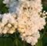
1015011
Обыкновенная (vulgaris) Память о Колесникове, бутоны кремоватые, цветки чисто белые, крупные, диаметром до 3 см, махровые – из 3-х венчиков, напоминают бутоны полиантовых розочек
900 –
1 200

1015026
Обыкновенная (vulgaris) Поль Дешанель (Paul Deschanel), цветки крупные махровые до 2,5 см, наружные лепестки пурпурно-розовые, внутренние - бледно-розово-лиловые. Соцветия красивые широкопирамидальные.
900
1015027
Обыкновенная (vulgaris) Президент Пуанкаре. Бутоны тёмно-лиловые. Крупные махровые цветки до 3 см в диаметре пурпурно-лиловые. Лепестки нижних венчиков округлые, верхних - острые, закручивающиеся внутрь. Соцветия крупные.
УЖЕ НЕТ
1015028
Обыкновенная (vulgaris) Роза Москвы (Rose De Moscou/Minkarl), цветки крупные, махровые, душистые. Бутоны светло-розовые, при распускании цветки розовато-белые.
УЖЕ НЕТ

1015018
Обыкновенная Сенсейшн (vulgaris Sensation), цветки двухцветные: пурпурно-красные с белой чёткой каймой по наружным краям широких, выпукло-вогнутых лепестков. Цветки простые, крупные, диаметром 2,2 см.
700 –
1 200
1015029
Этуаль де Ме (Etoile de Mai), бутоны тёмно-пурпурные. Цветки махровые, диаметром до 1,8 см с эффектом двухцветности. Лепестки закручены внутрь, с верхней стороны пурпурные, с нижней стороны светлее, до белых.
900
Скумпия (Cotinus)
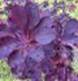
1016001
Кожевенная Ройэл Пёпл (coggygria Royal Purple), высота до 2 м. Листья тёмно-пурпурные, осенью тёмно-красные. Цветёт в июне-июле многочисленными желтоватыми цветками, собранными на концах побегов в рыхлые метелки.
700
Спирея (Spiraea)
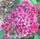
1017006
Японская Дабл Плей Ред (Japonica Double Play Red), высота и диаметр 60-80 см. Листья весной при роспуске бордово-фиолетовые, позднее зелёные. Цветки тёмно-малиново-красные, собраны в щитковидные соцветия.
500
Чубушник (Philadelphus)
1019001
Обыкновенный Жемчуг, высота 1,0-1,3 м, цветки чисто-белые, махровые, очень крупные, диаметром до 6см. Аромат средней интенсивности.
900

1019002
Обыкновенный Комсомолец, компактный сорт с белоснежными соцветиями размером 7-8 см и очень плотно расположенными цветками. Цветки отличаются махровостью и изящными длинными завитыми лепестками.
900
1019003
Обыкновенный Миннесота Сноуфлэйк (vulgaris Minnesota Snowflake), высота до 2 м, цветки белые, махровые, ароматные. Венчик состоит из крупных нижних и тонких, узких центральных лепестков. Цветки собраны в соцветие по 5 штук. Зацветает поздней весной.
900